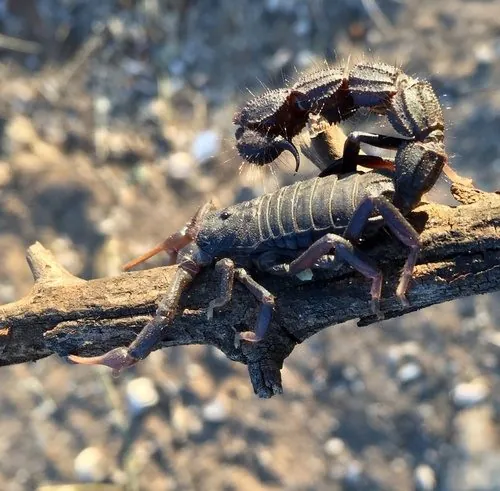

蛛形动物 · 动物界
黑粗尾蝎 Parabuthus transvaalicus

非洲南部的剧毒蝎，通体乌黑发亮、尾粗壮，可把毒液喷射成雾，被蜇可致严重中毒，是非洲最危险的蝎类之一。
- 分类
- 门节肢动物门纲蛛形纲目蝎目科钳蝎科属副钳蝎属
- 栖息环境
- 半干旱草原、灌丛、沙质荒地与岩石缝隙
- 地理分布
- 南非北部、博茨瓦纳、津巴布韦与莫桑比克南部
- 保护级别
- IUCN 未评估；受宠物贸易捕捉影响
物种志
黑粗尾蝎体长 10–15 厘米，通体乌黑至深褐，外壳厚实并带光泽。最显著的特征是尾部异常粗壮，由五节组成，末端毒囊膨大、尾刺粗硬，与其相对细小的双螯形成鲜明对比，这种“尾粗螯细”的比例通常意味着毒性较强。体表覆细密颗粒，步足粗壮，头胸甲前端有一对中眼与数对侧眼。
它们分布于南非、博茨瓦纳、津巴布韦与莫桑比克的半干旱草原、灌丛与沙质荒地，夜行性，白天藏在石块下或自挖的浅洞中。捕食昆虫、蜘蛛、小型蜥蜴与啮齿类，靠伏击与快速夹击制伏猎物。黑粗尾蝎能主动喷射毒液：受威胁时翘起尾部，从毒刺喷出细雾，可射出一米以上，若进入眼睛会引起剧痛与暂时性视力损伤。其毒液含神经毒素，被蜇后可出现剧痛、出汗、呕吐、肌肉抽搐，儿童与体弱者可能危及生命，须立即就医。
形态与习性
- 体长约 10–15 cm
- 毒性毒液含神经毒素，可致剧痛、出汗、呕吐与肌肉抽搐
- 喷毒可将毒液喷成细雾射出 1 m 以上，入眼可致剧痛
- 食性昆虫、蜘蛛、小型蜥蜴与啮齿类
- 活动节律夜行性，白天藏于石块下或自挖浅洞
- 形态特征尾极粗壮、毒囊膨大，双螯相对细小
- 寿命约 8–10 年
趣味知识
- 黑粗尾蝎能把毒液喷成一团细雾，最远射出一米多。
- 它的尾巴又粗又黑，螯却很小，这种比例往往意味着毒性强。
- 毒液喷进眼睛会剧痛难睁，处理时绝不能正对它的尾部。